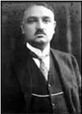

Yahya Kemal Beyatlı
Yahya Kemal Beyatlı (1884-1958)
Sessiz Gemi
Artık demir almak günü gelmişse zamandan,
Meçhule giden bir gemi kalkar bu limandan.
Hiç yolcusu yokmuş gibi sessizce alır yol;
Sallanmaz o kalkışta ne mendil ne de bir kol.
Rıhtımda kalanlar bu seyahatten elemli,
Günlerce siyah ufka bakar gözleri nemli.
Biçare gönüller! Ne giden son gemidir bu!
Hicranlı hayatın ne de son matemidir bu!
Dünyada sevilmiş ve seven nafile bekler;
Bilmez ki giden sevgililer dönmeyecekler.
Birçok gidenin her biri memnun ki yerinden,
Birçok seneler geçti; dönen yok seferinden.
Asıl adı Ahmed Agâh’tır. 2 Aralık 1884’te Üsküp’te doğmuştur. Şiir yazmaya lise yıllarında başlayan Yahya Kemal’in ilk şiirlerinde Tevfik Fikret başta olmak üzere Servet-i Fünun şairlerinin etkisi görülür. 1903 yılında Jön Türklere katılmak için gizlice Paris’e gider. Bu olayı yazılarında şöyle anlatır:
“Alafranga neslin birçok çocukları gibi bir Paris sevdasına tutulmuştum. Memleketi zindan, Avrupa’yı nurlu bir âlem gibi görüyordum. İstanbul’un hafiyelik havasından ürkmüştüm. Kendi milli muhitimin cenderesinden kurtulmak, Tevfik Fikret’in şiirinde, Halid Ziya’nın nesrinde ve bu iki müteceddidin peşine takılmış gençlerin eserlerinde, Fransızca’dan tercüme edilmiş romanlarda gördüğüm âleme atılmak istiyordum.”
1912 yılında İstanbul’a dönüşü Trablusgarp Savaşı’na rastlar. Çeşitli okullarda dersler veren Yahya Kemal, Kurtuluş Savaşı sonrası barış antlaşmasının imzalanması için Lozan’a giden heyette danışman olarak bulunur. Sonraki yıllarda milletvekilliği ve büyükelçilik görevlerini yapar.
Hiç evlenmemiştir ve 1 Kasım 1958 yılında İstanbul’da bağırsak hastalığından hayatını kaybetmiştir.
Çeşitli dergilerde yayımlanan şiir ve yazıları daha sonra onun adına kurulan dernek ve enstitü tarafından kitap hâline getirilerek yayımlanmıştır. Yazılarının yanı sıra kitap hâline gelen şiirleri şunlardır: Kendi Gökkubbemiz (1961), Eski Şiirin Rüzgârıyle (1962), Rubailer: Hayyam’ın Rubailerini Türkçe Söyleyiş (1963), Bitmemiş Şiirler (1976).
O dönem gelişmekte olan Ankara’ya çeşitli görevler için gelip giden Yahya Kemal’e Ankara’nın en çok hangi yönünü beğendiği sorulduğunda “İstanbul’a dönüşünü” cevabını vererek, İstanbul’a olan sevgi ve hayranlığını şiirlerinin dışında da ifade etmiştir.
Bir Başka Tepeden
Sana dün bir tepeden baktım aziz istanbul!
Görmedim gezmediğim, sevmediğim hiçbir yer.
Ömrüm oldukça, gönül tahtıma keyfince kurul!
Sade bir semtini sevmek bile bir ömre değer.
Yahya Kemal yemek yemekten oldukça hoşlanırdı. Bir dönem kilosu oldukça artan ünlü şair her zaman çıktığı yokuşların birinde artık mola vererek ilerlemek zorunda kalıyordu. Yine böyle bir günde nefes nefese dinlenirken yokuşta bulunan dükkânlardan birinin tezgâhtarı onu bir şeyler alması için sıkıştırmaya başlar:
“Buyrun beyim, ne alırsınız?”
Üst üste gelen sorulardan bunalan Yahya Kemal, derin bir nefes alarak yerinden doğrulup yola koyulmaya hazırlanırken tezgâhtara “Evladım müsaade etseydin biraz nefes alacaktım” diye cevap verir.
Yahya Kemal ile bir dostu arasında bir gün şöyle bir konuşma geçer:
Yahya Kemal: “Bu akşam yemeği benimle yemenizde bir mahsur var mı?”
Arkadaşı: “Ne münasebet üstat, ne mahsur olabilir, memnun olurum.”
Yahya Kemal: “Peki, bu akşam size geliyorum öyleyse.”
Yahya Kemal lokantaya gider. Mönüye şöyle bir baktıktan sonra kuzu kapaması ısmarlar. Ancak gelen yemekte sadece sebze vardır. Arar tarar ve küçük bir et parçasına rastlayınca garsonu çağırır:
“Evladım yanlışlıkla benim tabağımdan küçük bir parça et çıktı, sizin bir bilginiz var mı, yanlışlık olmasın?”
Pek fazla şiir yeteneği olmayan ve şiirlerini dinlemesi için ünlü şairi sık sık rahatsız edenlerle aralarında bazı konuşmalar geçer.
Bu kişilerden biri tüm şiirlerini okuduktan sonra Yahya Kemal’in görüşünü almak ister:
“Üstadım okuduklarımdan hangilerini beğendiniz?”
Yahya Kemal şöyle cevap verir:
“Henüz okumadıklarınızı!”
Yahya Kemal ile tanışan genç bir şair hemen ona şiirlerinden birkaçını okur ve övünerek ekler:
“Biliyor musunuz, hiç kimseden ders almadım, kendi kendimi yetiştirdim.”
Yahya Kemal derin bir iç çekerek, “Vah vah, çok hata etmişsiniz.”
Yahya Kemal, “Sizin şiirlerinizi okurken hayretler içinde kalıyorum.”
Genç şair, “Nasıl yazdığıma şaşırıyorsunuz değil mi üstadım?”
Yahya Kemal, “Hayır, beni asıl şaşırtan neden yazdığınız!”
Bir toplulukta yeni çıkan şairlerden birinin şiiri okunur. Orada bulunanlardan biri memnuniyetsizce “Adam sanki ayaklarıyla yazmış bu şiiri” diye yorumda bulunur.
Yahya Kemal sakince eklemede bulunur bu yoruma, “Hem de topal galiba!”
Uzun, sıkıcı ve anlamsız bir şiir okuyan şair, “Ben bu şiiri çok büyük bir heyecanın etkisiyle yazdım” der.
Yahya Kemal yeteneksiz bulduğu şairin görüşüne katılır.
“Haklısınız, sizi mutlaka ölümle tehdit etmişler gibi görünüyor.”
Gevezeliğinden dolayı pek sevilmeyen bir adam, Yahya Kemal ve Mehmet Akif sohbet ederlerken yanlarına yaklaşır:
“Sohbetiniz koyu olsun, yine ne yalanlar atıyorsunuz?” Bu söze Yahya Kemal aldırış etmeden şöyle yanıt verir: “Mehmet Akif’e seni övüyordum.”
Yahya Kemal’den... Rindlerin Akşamı
Dönülmez akşamın ufkundayız.
Vakit çok geç; Bu son fasıldır ey ömrüm nasıl geçersen geç!
Cihana bir daha gelmek hayal edilse bile,
Avunmak istemeyiz öyle bir teselliyle.
Geniş kanatları boşlukta simsiyah açılan
Ve arkasında güneş doğmayan büyük kapıdan
Geçince başlayacak bitmeyen sükûnlu gece.
Guruba karşı bu son bahçelerde, keyfince,
Ya şevk içinde harab ol, ya aşk içinde gönül!
Ya lale açmalıdır göğsümüzde yahud gül.